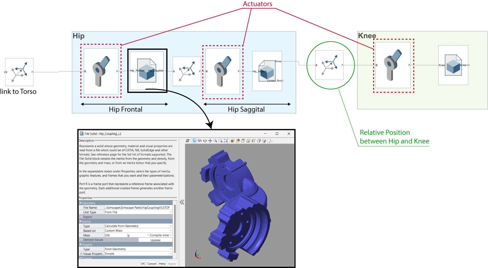

Technical Details
The core of my project involved designing a controller based on capture point control for a thruster-assisted bipedal robot, which I named Harpy. Capture point control is a method used to stabilize the upper body by predicting the robot's center of mass (CoM) and adjusting the foot placement accordingly. Here’s a detailed breakdown of my approach and methodology:
Dynamic Model and Simulation:
Image: Harpy Simulink Model
I started by developing a comprehensive dynamic model of Harpy. This included defining the kinematic structure, specifying the inertial properties, and modeling the actuator dynamics of the robot. I used MATLAB and Simscape Multibody to build a high-fidelity simulation environment. This setup allowed me to accurately simulate the robot's movements and interactions with its environment.
Kinematic Structure:
Image: Kinematic Structure
Harpy’s kinematic structure features six revolute joints: two at each hip for frontal and sagittal movement, and one at each knee for sagittal movement. These joints were modeled to replicate the robot's physical design and ensure realistic motion during simulations. I employed prismatic joints with spring and damping parameters to simulate the robot’s shock absorption capabilities. This was crucial for mimicking the real-world response to impacts.
Actuation and Sensing:

Image: Detailed configuration of hip and knee actuators depicted as revolute joints within the robotic leg
The robot’s actuators were modeled to control the joint movements based on computed trajectories. I used PID controllers to manage the thrust forces and stabilize the robot’s roll and yaw motions. Sensors such as Transform Sensors and Inertia Sensors were integrated into the model to provide real-time data on body position, velocity, rotation, and foot placement. These sensors were vital for implementing the capture point control strategy.
Control Strategy:
Image: Capture Point Illustration for Harpy
Image: Capture Point Concept
Capture point control method calculates the point on the ground where the robot's foot should be placed to maintain balance. By determining this capture point, the controller adjusts the foot trajectories dynamically to prevent falling. I implemented a feedback loop where the computed capture point influenced the trajectory generation. This ensured that the robot’s gait continuously adapted to maintain stability.
Simulation Workflow:
Image: Simulation Workflow
The simulation workflow involved initializing the robot's position and step parameters, generating foot trajectories using Bezier polynomials, solving inverse kinematics for joint angles, and applying the capture point control for stability. The entire system operated in a modular architecture, allowing seamless integration and adjustments of individual components.